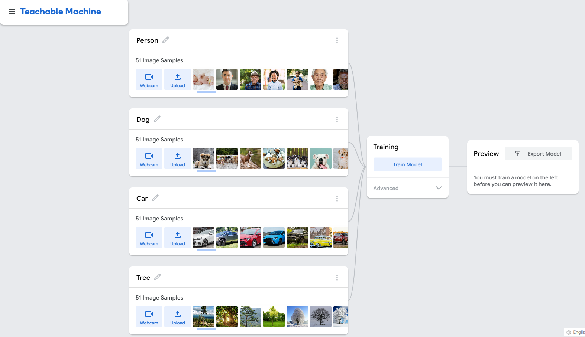
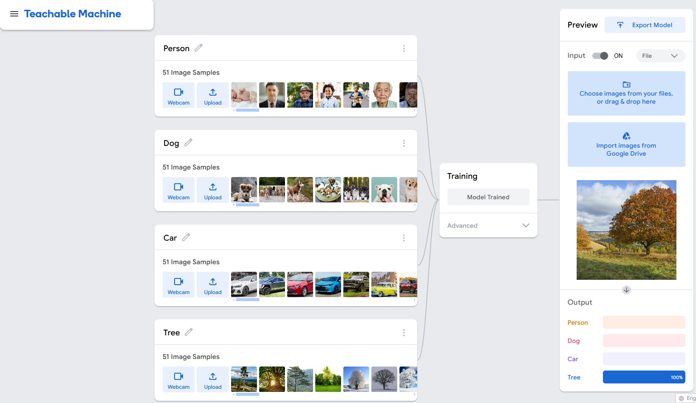

| Project Statement |
Overview Our project utilizes Teachable Machine, a web-based tool from Google, to create and train machine learning models. This specific project focuses on building an image classification model capable of distinguishing among categories such as trees, dogs, people, and cars. The aim is to explore the potential of AI in image recognition while addressing critical issues such as algorithmic bias, transparency, and ethical considerations. Our project draws from lessons in “Unmasking AI” by Buolamwini, emphasizing the importance of equitable AI design. Our project raised ethical questions about transparency and accountability. Drawing from Buolamwini's emphasis on documenting AI processes, we provided detailed documentation and instructional videos to ensure users understand how the model works and its limitations. Transparency is vital to fostering trust and enabling users to make informed decisions about AI technologies. Bias and Discrimination In “Unmasking AI,” we learned about algorithmic bias and how it favors some users while marginalizing others. Buolawmini talks about her experience with the white mask on how the face recognition software would only detect her face when she puts on the white mask. When she wasn't wearing the white mask, the software failed to detect her dark-skinned face. Furthermore, Buolawmini also highlights how there are gender biases as well. Companies would filter out resumes or applications if it detected that the applicants were women. This was due to the data that the model was trained on. It highly favored men as opposed to women. Even when the women were more qualified, it would throw out the resumes for anything it deemed feminine. In training our model, we realized that it is crucial to diversify the training data that we provided to the model. Without it, the algorithm might perform better for some users while marginalizing others. To do this, we diversified our data of facial recognition by providing multiple images of people with different skin color types, ethnicity, and gender. By doing so, the model will be better able to detect different types of faces regardless of skin color, ethnicity, and gender. We tried to the best of our ability to eliminate any type of algorithmic biases when detecting faces in our model. Transparency and Accountability In “Unmasking AI,” Buolamwini writes a report about the misuse of AI and biases that Amazon had using it. She also discovered that an apartment building where her family member lived had installed cameras that were being used unfairly. Transparency of what these companies or people are doing with Artificial Intelligence is extremely important. Since there are people that may not understand what exactly is going on with the AI around them. They need that transparency so that they know what to expect and how to speak up if there are things that they believe are wrong. With our project we want people to understand what we are doing and how it works to provide an excellent experience for everyone. That is why we documented our process on how we trained our image model. We also provided videos to show people how to use our image model effectively, and tested our model on multiple different images to ensure it was accurate on the output. Intersectionality Intersectionality is a word that we learned about at the start of our first two projects. Intersectionality is important because it is an overall framework of who we are; that we're not just one thing, but multiple things. In “Unmasking AI,” Buolamwini discusses Intersectionality not only in relation to her own experiences but also how companies are (or are not) applying it in their AI systems. Specifically, how those companies incorporate these issues into AI systems, often leading to inaccuracies that result in unjust treatment of people. Multiple forms of inequality create disadvantages and lead to barriers that others may not fully comprehend. We all experience inequality differently. Intersectionality can help us understand the problems going on. In her book, Buolawini goes into depth about Amazon and Microsoft's AI biases. Specifically, when Amazon used AI to screen resumes, it disproportionately eliminated women's resumes, even when they were fully qualified for the jobs. Other companies, like Microsoft, faced similar issues with their facial recognition systems, which were proven to be more accurate for white men. With our project, we strived to create a bias-free algorithm to ensure fairness for all users, unlike big tech companies whose algorithms often reflect biases despite being developed by large teams. Regulation and Policy Today, there is not much regulation for AI on what it can or cannot do. In England, police used AI-powered street cameras for facial recognition on random pedestrians, but the system was highly inaccurate and even stopped a man simply for covering his face. Other problems this can cause include unfair treatment of people of color, putting them in danger, and increasing the risk of wrongfully incarcerating innocent individuals. These are issues that need to be addressed with clear regulations and policies governing what companies can and cannot do with AI. As technology evolves rapidly, there is a risk of AI becoming increasingly independent and more biased. For our model, we chose a diverse set of images to represent our subjects in order to prevent biases in our model. For example, we chose multiple images of people of different race and skin color, and we also chose multiple varieties of dogs, cars, and trees. We also kept regulation and policy in mind when creating our image model by carefully looking at what data we were feeding our image model. Our goal was to select images that we thought would fairly represent our subjects giving everyone the right to use it. In Summary/Lessons learned With our project, our goal is to address the issues of algorithmic bias by applying what we have learned from the book and throughout this course. All the biases and unequal treatment caused by AI are issues we are working to fully eliminate. Buolamwini's experience of her putting on a white mask to be seen by the facial recognition software is something that we want to eliminate. It made her search for answers about AI and she learned that there were many problems going on with the use of AI. These issues are extremely important in shaping how our model can be used fairly by everyone. Buolamwini brought attention to these issues, raising awareness among more people. Her advocacy led some big tech companies to address problems with their facial recognition systems and the unfair treatment of certain individuals using their algorithms. Throughout this course we have read, watched and learned many things about Artificial Intelligence. We learned that there are good and bad things about AI. In particular, we learned about tech companies and their unfair treatment against minorities and against women. That is why the goal of our project is to eliminate those issues and biases. We took all the lessons we've learned from this course and used them to build the best possible model. Companies could learn from this and address the issues of biases that Buolamwini identified in major tech companies. After all, what's the point of providing these services if they are not accessible to everyone? Algorithm We tested our model using multiple images from across the web of cars, trees, dogs, and people to ensure the accuracy of our algorithm and eliminate bias in AI. Try out our model for an excellent experience with AI. We have also provided a video of the algorithm at work to help with your experience! |
|---|
| The Process |
For our model, we used over 50 samples for each subject in order to ensure accuracy and a diverse dataset. We first found photos of our subjects which were pictures of a person, a dog, a car, and a tree. We then imported these photos into the image model and trained the model to recognize these subjects. Some challenges that we ran into were trying to find images of the subjects at different angles, and finding different varieties of the same subject. For example, finding different types of trees and cars, or breeds of dogs, etc. After successfully training the model, the image model was able to correctly identify the subject that was presented to it. As can be seen below, the image model correctly identified the tree. Furthermore, we also took ethical considerations while training our model. We took into considerations and did our best to minimize issues such as societal biases such as gender, race, and age stereotypes. We did this by ensuring that we had a diverse and representative dataset.  |
|---|
| Video |
|---|
| Try the Model |
Try our model on the Google Teachable Machine website! Also try our model on the p5.js website! GitHub Repository |
|---|